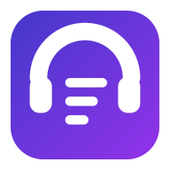
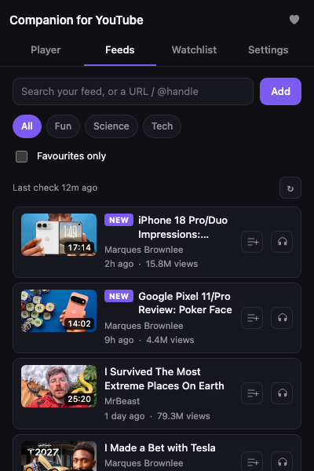
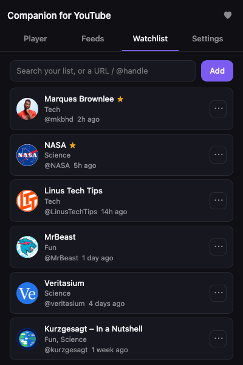
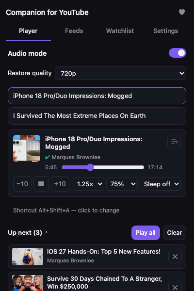

Companion for YouTube
Follow YouTube channels without a Google account: one merged feed, alerts on new uploads, and a low-data audio mode.
Free, open source, no account.

Feeds
Every new video from the channels you follow, in one list, newest first. Named groups narrow it. Live streams and premieres are tagged. Shorts stay hidden unless you want them. A New tag marks what arrived since you last opened the popup.
Watchlist
Add a channel by pasting its link or @handle, or press Add on the tab you are on. Import your YouTube subscriptions from a Google Takeout file; it is read on your device and nothing signs in. Star favourites. Mute alerts for one channel from its menu; its videos still show in the feed.

Player
Audio mode pins the video to 144p and covers it, so you keep the sound and use about 8× less data than 720p. Seek, skip 10 seconds, speed and volume sit in the popup. A sleep timer pauses after 15, 30 or 60 minutes. Switch it off and the quality you were watching comes back.

Up next
Add videos from your feed to a listen-later list under the player. Press Play all and it plays itself in one tab, moving on as each video ends, with audio mode on or off and the popup closed.
Private by design
No account, no Google sign-in, no API key. It reads only public youtube.com pages, without your YouTube cookies. Your channels, feed and settings stay in the browser. Export them to a file, and import them back.